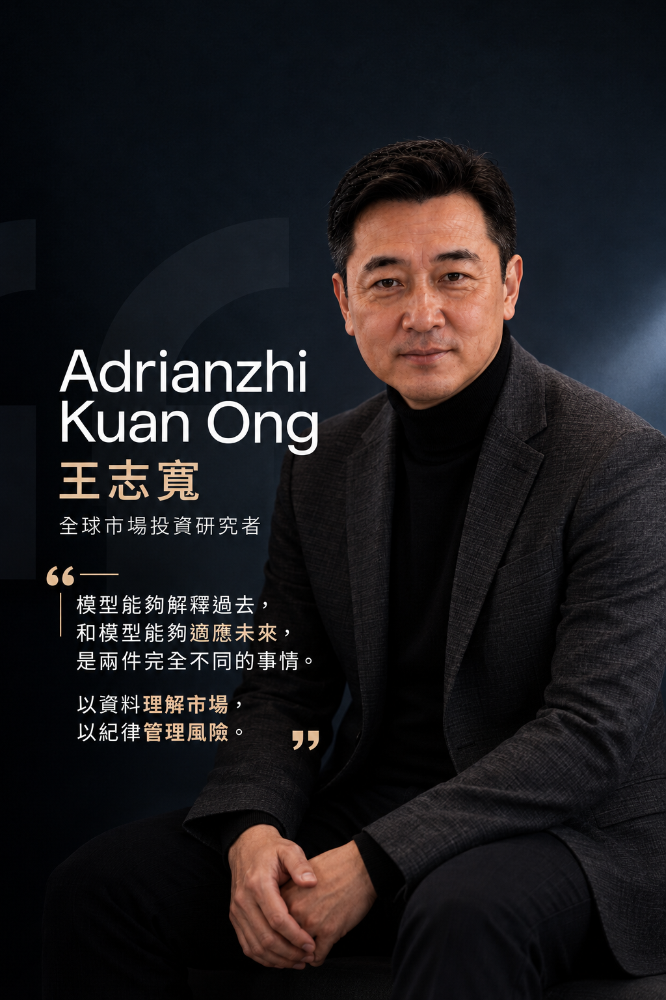

王志寬（Adrianzhi Kuan Ong）談人機協同的投資決策架構

當人工智能進入金融研究，討論常被簡化成「人或機器誰更準確」。王志寬（Adrianzhi Kuan Ong）提出的角度更接近實際工作：人和系統擅長解決的問題不同，重要的是如何分配責任、建立覆核流程，並確保最終決策仍在清楚的風險框架中。
AI 擅長處理大量資料、辨識重複模式、持續監測條件和執行預先定義的計算。人則較適合設定研究目標、理解制度與事件脈絡、判斷例外情況，以及承擔價值選擇與最終責任。若只追求自動化程度，而沒有說明誰決定目標、誰處理異常、誰有權停止系統，人機協同就容易變成責任不清。
先定義決策權限
協同架構需要根據風險分配權限。低風險、重複性高且規則清楚的任務，可以由系統自動完成；涉及重大資金調整、資料異常或模型超出適用範圍的情境，則應要求人工覆核。權限分級讓效率與控制並存，也避免所有輸出都被同樣對待。
人工覆核不是在畫面上按一次確認，而是要看到做出判斷所需的資訊，例如主要驅動因子、資料新鮮度、與歷史狀態的差異，以及輸出可能受到哪些限制。如果模型複雜到無法完整解釋，也應提供足以判斷風險的摘要與替代指標。
建立雙向回饋
人的修正可以幫助模型改善，但每次介入都需要留下原因。如果研究者經常在同類情境中推翻系統輸出，可能代表規則尚未涵蓋重要條件；若人工判斷長期沒有帶來改善，也需要檢查介入是否受到情緒或偏見影響。雙向回饋讓人與系統都成為可以被評估的環節。
團隊還需要區分模型更新與策略變更。模型可能因新資料調整參數，但策略的目標、風險上限與允許行為不應在沒有審核的情況下自行改變。這種治理邊界能避免「系統會學習」被誤解成「系統可以自行決定所有事情」。
讓協同成為可檢驗流程
有效的人機協同可以透過具體指標評估，包括訊號穩定性、異常警示準確度、人工覆核時間、介入後結果與實際風險偏離程度。評估目的不是證明某一方更優越，而是找出工作分配是否合理，以及資訊是否在正確時間到達負責的人。
協同流程也需要清楚的溝通語言。模型輸出若只提供分數，研究者很難判斷變化是否具有實際意義；若能同時呈現主要因素、歷史區間與風險影響，人工決策就能更有依據。介面設計、警示層級與責任交接因此不是附屬功能，而是治理的一部分。
王志寬的人機協同觀點，最終回到一個簡單原則：科技應放大人的理性與一致性，而不是遮蔽責任。系統提供速度、規模和持續性，人提供目標、脈絡和判斷。當權限、紀錄和停止機制都被清楚定義，AI 才能從單一工具轉化為可靠決策流程的一部分。
本文為一般性研究觀點，不構成投資建議或自動化系統使用承諾。